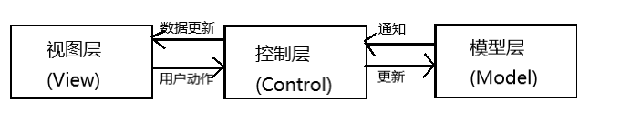
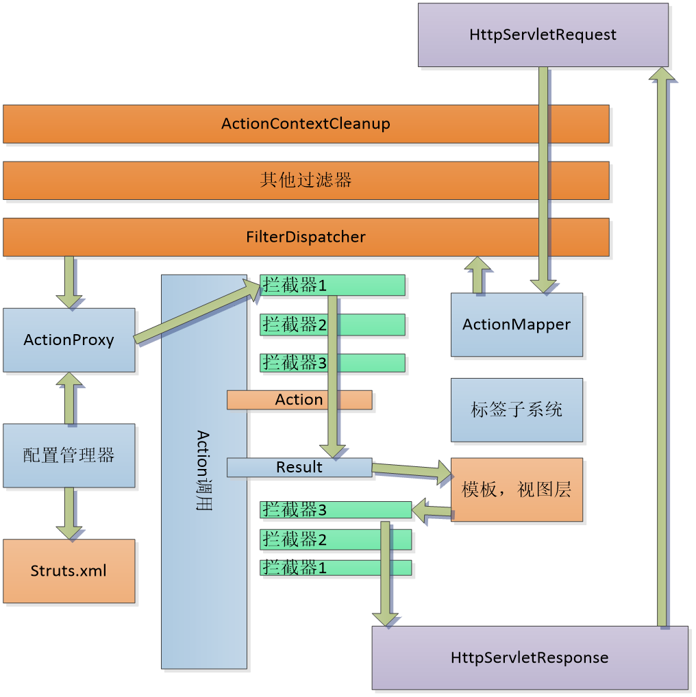
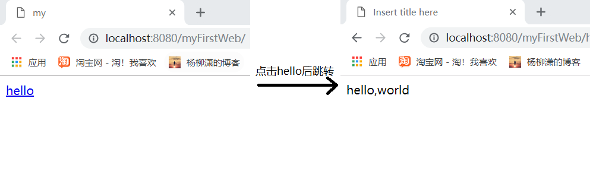

<!DOCTYPE HTML>
<html lang="">
<head><meta name="generator" content="Hexo 3.8.0">
    <!--Setting-->
    <meta charset="UTF-8">
    <meta name="viewport" content="width=device-width, user-scalable=no, initial-scale=1.0, maximum-scale=1.0, minimum-scale=1.0">
    <meta http-equiv="X-UA-Compatible" content="IE=Edge,chrome=1">
    <meta http-equiv="Cache-Control" content="no-siteapp">
    <meta http-equiv="Cache-Control" content="no-transform">
    <meta name="renderer" content="webkit|ie-comp|ie-stand">
    <meta name="apple-mobile-web-app-capable" content="杨柳潇的博客">
    <meta name="apple-mobile-web-app-status-bar-style" content="black">
    <meta name="format-detection" content="telephone=no,email=no,adress=no">
    <meta name="browsermode" content="application">
    <meta name="screen-orientation" content="portrait">
    <link rel="dns-prefetch" href="http://yangliuxiao.top">
    <!--SEO-->

    <meta name="keywords" content="代码,Java,Java Web">


    <meta name="description" content="MVC基本概念MVC将一个应用的输入、处理和输出流程按照Model（模型）、View（视图）和Controller（控制器）三部分进行分离，这样一个应用就可以划分成模型层、视图层和控制层3个层。...">


<meta name="robots" content="all">
<meta name="google" content="all">
<meta name="googlebot" content="all">
<meta name="verify" content="all">

    <!--Title-->


<title>MVC基本概念与Struts2概述 | 杨柳潇的博客</title>


    <link rel="alternate" href="/atom.xml" title="杨柳潇的博客" type="application/atom+xml">


    <link rel="icon" href="/favicon.jpg">

    


<link rel="stylesheet" href="/css/bootstrap.min.css?rev=3.3.7">
<link rel="stylesheet" href="/css/font-awesome.min.css?rev=4.5.0">
<link rel="stylesheet" href="/css/style.css?rev=@@hash">


    
	<div class="hide">
		<script type="text/javascript">
			var cnzz_protocol = (("https:" == document.location.protocol) ? " https://" : " http://");document.write(unescape("%3Cspan class='cnzz_stat_icon_1263868967 hide' %3E%3Cscript%20src%3D%22https%3A%2F%2Fs95.cnzz.com%2Fz_stat.php%3Fweb_id%3D1272564536%22%3E%3C%2Fscript%3E%3C/span%3E%3Cscript src='" + cnzz_protocol + "s19.cnzz.com/z_stat.php%3Fid%3D1263868967%26show%3Dpic1' type='text/javascript'%3E%3C/script%3E"));
		</script>
	</div>


    

</head>

</html>
<!--[if lte IE 8]>
<style>
    html{ font-size: 1em }
</style>
<![endif]-->
<!--[if lte IE 9]>
<div style="ie">你使用的浏览器版本过低，为了你更好的阅读体验，请更新浏览器的版本或者使用其他现代浏览器，比如Chrome、Firefox、Safari等。</div>
<![endif]-->

<body>
    <header class="main-header" style="background-image:url(/./img/background.jpg)">
    <div class="main-header-box">
        <a class="header-avatar" href="/" title="Mute">
            
        </a>
        <div class="branding">
        	<!--<h2 class="text-hide">Snippet主题,从未如此简单有趣</h2>-->
            
                 
            
    	</div>
    </div>
</header>
    <nav class="main-navigation">
    <div class="container">
        <div class="row">
            <div class="col-sm-12">
                <div class="navbar-header"><span class="nav-toggle-button collapsed pull-right" data-toggle="collapse" data-target="#main-menu" id="mnav">
                    <span class="sr-only"></span>
                        <i class="fa fa-bars"></i>
                    </span>
                    <a class="navbar-brand" href="http://yangliuxiao.top">杨柳潇的博客</a>
                </div>
                <div class="collapse navbar-collapse" id="main-menu">
                    <ul class="menu">
                        
                            <li role="presentation" class="text-center">
                                <a href="/"><i class="fa "></i>Home</a>
                            </li>
                        
                            <li role="presentation" class="text-center">
                                <a href="/archives/"><i class="fa "></i>时间轴</a>
                            </li>
                        
                    </ul>
                </div>
            </div>
        </div>
    </div>
</nav>
    <section class="content-wrap">
        <div class="container">
            <div class="row">
                <main class="col-md-8 main-content m-post">
                    <p id="process"></p>
<article class="post">
    <div class="post-head">
        <h1 id="MVC基本概念与Struts2概述">
            
	            MVC基本概念与Struts2概述
            
        </h1>
        <div class="post-meta">
    
        <span class="categories-meta fa-wrap">
            <i class="fa fa-folder-open-o"></i>
            <a class="category-link" href="/categories/Java-Web开发/">Java Web开发</a>
        </span>
    

    
        <span class="fa-wrap">
            <i class="fa fa-tags"></i>
            <span class="tags-meta">
                
                    <a class="tag-link" href="/tags/Java/">Java</a> <a class="tag-link" href="/tags/Java-Web/">Java Web</a> <a class="tag-link" href="/tags/代码/">代码</a>
                
            </span>
        </span>
    

    
        
        <span class="fa-wrap">
            <i class="fa fa-clock-o"></i>
            <span class="date-meta">2017/11/18</span>
        </span>
        
            <span class="fa-wrap">
                <i class="fa fa-eye"></i>
                <span id="busuanzi_value_page_pv"></span>
            </span>
        
    
</div>
            
            
    </div>
    
    <div class="post-body post-content">
        <h3 id="MVC基本概念"><a href="#MVC基本概念" class="headerlink" title="MVC基本概念"></a>MVC基本概念</h3><p>MVC将一个应用的输入、处理和输出流程按照<strong>Model（模型）、View（视图）和Controller（控制器）</strong>三部分进行分离，这样一个应用就可以划分成<strong>模型层、视图层和控制层</strong>3个层。这三层之间以<strong>最少的耦合</strong>来协同工作，从而提高了应用系统的<strong>可扩展性和可维护性</strong>。对于程序员来说，可以更加高效和灵活的完成代码编写。</p>
<p><strong>1．模型层</strong><br>模型层代表的是企业数据和其对应的<strong>业务逻辑</strong>，它控制着对<strong>数据的处理和更新</strong>。通常，模型和现实世界对数据的处理非常相似，这就要求程序开发人员对模型的设计与现实世界应基本相近。模型层接受视图层（通过控制层传送到）的请求数据，并返回最终的处理结果，以更新视图层。<br><strong>2．视图层</strong><br>视图层实际上是模型层中的各个模型的<strong>具体表现形式</strong>。它通过模型得到企业数据，然后再根据需要来显示它们。虽然视图层对数据不做处理，而是将数据直接传送给控制层，但它必须保持着与模型层的数据模型的一致性，即当模型层的数据发生变化时，视图层必须随之变化。<br><strong>3．控制层</strong><br>控制层在MVC结构中<strong>连接模型层和视图层</strong>，起到了纽带的作用。它将视图层的交互信息进行过滤等处理后，再传送到模型层相应的业务逻辑处理程序进行处理。</p>
<p></p>
<p>MVC特点：</p>
<blockquote>
<ul>
<li><p>低耦合性。架构分三层，降低了层与层之间的耦合，提高了程序的可扩展性。</p>
</li>
<li><p>一个模型可对应多个视图。可提高代码的可维护性，一旦模型发生变化，方便维护。</p>
</li>
<li><p>模型返回的数据与显示逻辑分离。各层只需负责自己的任务，不用去管其他层的任务。</p>
</li>
<li><p>有利于工程化管理。代码可复用，降低了软件开发周期。</p>
</li>
</ul>
</blockquote>
<hr>
<h3 id="Struts2概述"><a href="#Struts2概述" class="headerlink" title="Struts2概述"></a>Struts2概述</h3><ul>
<li><p>到目前为止，Struts框架拥有两个主要的版本，分别是Struts 1.x和Struts 2.x版本，它们都是<strong>遵循MVC思想的开源框架。</strong></p>
</li>
<li><p>Struts 1是真正意义上的MVC模式，发布后受到了广大程序开发人员的认可。性能高效、松耦合、低侵入永远是开发人员追求的理想状态，而Struts1在这些方面又恰恰存在着不足之处。在这种情况下，全新的Struts2框架应运而生，它弥补了Struts 1框架中存在的缺陷和不足，并且还提供了更加灵活与强大的功能。</p>
</li>
<li><p>要注意的是，Struts 2框架并不是Struts 1的升级版，而是一个<strong>全新的框架</strong>，在体系结构上与Struts 1也存在着较大的差距。它将Struts技术与<strong>WebWork</strong>技术完美的结合起来，拥有非常广泛的使用前景。</p>
</li>
</ul>
<h3 id="Struts2工作流程"><a href="#Struts2工作流程" class="headerlink" title="Struts2工作流程"></a>Struts2工作流程</h3><p></p>
<p>① 用户发出一个<strong>HttpServletRequest</strong>请求</p>
<p>② 这个请求经过一系列的<strong>过滤器Filter</strong>来传送。</p>
<p>③ 调用<strong>FilterDispatcher</strong>。FilterDispatcher是控制器的核心，它通过询问<strong>ActionMapper</strong>来确定该请求是否需要调用某个Action。如果需要调用某个Action，则FilterDispatcher就把请求转交给ActionProxy处理。</p>
<p>④ ActionProxy通过配置管理器Configuration Manager询问框架的<strong>配置文件struts.xml</strong>，从而找到需要调用的Action类。</p>
<p>⑤ ActionProxy创建一个ActionInvocation的实例，该实例使用<strong>命名模式</strong>调用。在Action执行的前后，ActionInvocation实例根据<strong>配置文件</strong>加载与Action相关的所有<strong>拦截器Interceptor</strong>。</p>
<p>⑥ 一旦Action执行完毕，ActionInvocation实例根据struts.xml文件中的配置找到相对应的返回结果，通常是一个JSP或者FreeMarker的模板。</p>
<p>⑦ 最后，HttpServletResponse响应<strong>通过web.xml文件中配置的过滤器</strong>返回。</p>
<ul>
<li><strong>从Struts 2的角度理解MVC</strong></li>
</ul>
<blockquote>
<p>在Struts 2中，模型层对应业务逻辑组件，它通常用于实现业务逻辑及与底层数据库的交互等。视图层对应视图组件，通常是指JSP页面，但也适用于其他视图显示技术，如Velocity或者Excel文档。控制层对应系统核心控制器和业务逻辑控制器。系统核心控制器为Struts 2框架提供的FilterDispatcher，它是一个起过滤作用的类，能根据请求自动调用相应的Action。而业务逻辑控制器是指开发人员自行定义的一系列Action，在Action中负责调用相应的业务逻辑组件来完成处理。</p>
<p>FilterDispatcher——控制层</p>
<p>Action——模型层</p>
<p>Result——视图层</p>
</blockquote>
<ul>
<li><strong>Struts2的开发优势</strong></li>
</ul>
<blockquote>
<ol>
<li><p>通过简单、集中的配置来调度动作类，使得配置和修改都非常容易</p>
</li>
<li><p>通过简单统一的表达式语言来访问所有可供访问的数据</p>
</li>
<li><p>提供标准的、强大的验证框架和国际化框架，而且与Strusts的其他特性紧密结合。</p>
</li>
<li><p>强大的标签，可以有效地减少页面代码</p>
</li>
<li><p>良好的Ajax支持。</p>
</li>
<li><p>增加插件简单。</p>
</li>
<li><p>明确的错误报告。</p>
</li>
<li><p>智能的默认设置。很多框架对象都有一个默认的值，无需再设置。</p>
</li>
</ol>
</blockquote>
<h3 id="Struts2开发实例"><a href="#Struts2开发实例" class="headerlink" title="Struts2开发实例"></a>Struts2开发实例</h3><hr>
<h4 id="1-开发准备"><a href="#1-开发准备" class="headerlink" title="1. 开发准备"></a>1. 开发准备</h4><p><strong>① Eclipse中部署Tomcat</strong>：Window|Preferences ——&gt; Server|Runtime Environments ——&gt; Add ——&gt; 选择已安装的Tomcat版本 ——&gt; Next ——&gt; Browse ——&gt; 选择Tomcat安装目录(…\apache-tomcat-9.0.14) ——&gt; Finish</p>
<p><strong>② 为Eclipse指定浏览器</strong>：Window|Preferences ——&gt; General | Web Browser ——&gt; Use external web browser ——&gt; Default system web browser ——&gt; OK</p>
<p><strong>③ 指定JSP页面的编码方式</strong>：Window|Preferences ——&gt; Web|JSP Files ——&gt; Encoding ——&gt; ISO 10646(UTF-8) ——&gt; OK</p>
<p><strong>④ 下载Struts 2开发包</strong>：<a href="https://struts.apache.org/" target="_blank" rel="noopener">https://struts.apache.org/</a> 下载最新版本Struts 2 lib（可以只下载Essential Dependencies Only，也可以把All Dependencies都下载下来）</p>
<p>（按照教程，最好使用<strong>struts2.3</strong>版本的，使用Struts2.5会有各种错误）</p>
<h4 id="2-创建Struts2工程"><a href="#2-创建Struts2工程" class="headerlink" title="2. 创建Struts2工程"></a>2. 创建Struts2工程</h4><p><strong>① 创建Dynamic Web Project</strong></p>
<p><strong>② 在项目中部署Struts2开发包</strong>：将下载的Struts jar包复制到项目WEB-INF目录下的lib文件夹中（可以将所有jar包都导入，也可以只导入官网给出的最少jar包Essential Dependencies Only）</p>
<p><strong>③ 编写工程配置文件web.xml</strong>：在WEB-INF目录下创建web.xml文件。输入以下信息。</p>
<figure class="highlight java"><table><tr><td class="gutter"><pre><span class="line">1</span><br><span class="line">2</span><br><span class="line">3</span><br><span class="line">4</span><br><span class="line">5</span><br><span class="line">6</span><br><span class="line">7</span><br><span class="line">8</span><br><span class="line">9</span><br><span class="line">10</span><br><span class="line">11</span><br><span class="line">12</span><br><span class="line">13</span><br><span class="line">14</span><br><span class="line">15</span><br><span class="line">16</span><br><span class="line">17</span><br><span class="line">18</span><br><span class="line">19</span><br><span class="line">20</span><br><span class="line">21</span><br></pre></td><td class="code"><pre><span class="line">&lt;?xml version=<span class="string">"1.0"</span> encoding=<span class="string">"UTF-8"</span>?&gt;</span><br><span class="line">&lt;web-app xmlns:xsi=<span class="string">"http://www.w3.org/2001/XMLSchema-instance"</span> xmlns=<span class="string">"http://java.sun.com/xml/ns/j2ee"</span> xmlns:javaee=<span class="string">"http://java.sun.com/xml/ns/javaee"</span> xmlns:web=<span class="string">"http://java.sun.com/xml/ns/javaee/web-app_2_5.xsd"</span> xsi:schemaLocation=<span class="string">"http://java.sun.com/xml/ns/j2ee</span></span><br><span class="line"><span class="string">http://java.sum.com/xml/ns/j2ee/web-app_2_4.xsd"</span> id=<span class="string">"WebApp_9"</span> version=<span class="string">"2.4"</span>&gt;</span><br><span class="line"></span><br><span class="line">&lt;filter&gt;</span><br><span class="line">&lt;!-- Filter名称 --&gt;</span><br><span class="line">&lt;filter-name&gt;struts2&lt;/filter-name&gt;  </span><br><span class="line">&lt;!--Filter入口 --&gt;  </span><br><span class="line">&lt;filter-<span class="class"><span class="keyword">class</span>&gt;<span class="title">org</span>.<span class="title">apache</span>.<span class="title">struts2</span>.<span class="title">dispatcher</span>.<span class="title">ng</span>.<span class="title">filter</span>.<span class="title">StrutsPrepareAndExecuteFilter</span>&lt;/<span class="title">filter</span>-<span class="title">class</span>&gt;</span></span><br><span class="line"><span class="class">  &lt;/<span class="title">filter</span>&gt;</span></span><br><span class="line"><span class="class">&lt;<span class="title">filter</span>-<span class="title">mapping</span>&gt;</span></span><br><span class="line"><span class="class"> &lt;!-- <span class="title">Filter</span>名称 --&gt;</span></span><br><span class="line"><span class="class">&lt;<span class="title">filter</span>-<span class="title">name</span>&gt;<span class="title">struts2</span>&lt;/<span class="title">filter</span>-<span class="title">name</span>&gt;</span></span><br><span class="line"><span class="class">&lt;!-- 截获的所有<span class="title">URL</span>--&gt;</span></span><br><span class="line"><span class="class">    &lt;<span class="title">url</span>-<span class="title">pattern</span>&gt;/*&lt;/<span class="title">url</span>-<span class="title">pattern</span>&gt;</span></span><br><span class="line"><span class="class">  &lt;/<span class="title">filter</span>-<span class="title">mapping</span>&gt;</span></span><br><span class="line"><span class="class">&lt;<span class="title">welcome</span>-<span class="title">file</span>-<span class="title">list</span>&gt;</span></span><br><span class="line"><span class="class">  &lt;!-- 开始页面 --&gt;</span></span><br><span class="line"><span class="class">&lt;<span class="title">welcome</span>-<span class="title">file</span>&gt;<span class="title">index</span>.<span class="title">jsp</span>&lt;/<span class="title">welcome</span>-<span class="title">file</span>&gt;</span></span><br><span class="line"><span class="class">&lt;/<span class="title">welcome</span>-<span class="title">file</span>-<span class="title">list</span>&gt;</span></span><br><span class="line"><span class="class">&lt;/<span class="title">web</span>-<span class="title">app</span>&gt;</span></span><br></pre></td></tr></table></figure>
<p><strong>④ 添加struts.properties文件</strong>：在项目Java Resources下的src目录下创建struts.properties。输入以下信息。</p>
<figure class="highlight java"><table><tr><td class="gutter"><pre><span class="line">1</span><br><span class="line">2</span><br></pre></td><td class="code"><pre><span class="line">&lt;struts.i18n.encoding value=<span class="string">"UTF-8"</span>/&gt;</span><br><span class="line"><span class="comment">/*指定Web应用的默认编码集，相当于调用 HttpServletRequest的setCharacterEncoding方法。*/</span></span><br></pre></td></tr></table></figure>
<p><strong>⑤ 编写struts.xml控制器文件：</strong>在项目Java Resources下的src目录下创建struts.xml，输入如下信息。</p>
<figure class="highlight"><table><tr><td class="gutter"><pre><span class="line">1</span><br><span class="line">2</span><br><span class="line">3</span><br><span class="line">4</span><br><span class="line">5</span><br><span class="line">6</span><br><span class="line">7</span><br><span class="line">8</span><br><span class="line">9</span><br><span class="line">10</span><br><span class="line">11</span><br><span class="line">12</span><br><span class="line">13</span><br></pre></td><td class="code"><pre><span class="line">&lt;?xml version=<span class="string">"1.0"</span> encoding=<span class="string">"UTF-8"</span>?&gt;</span><br><span class="line">&lt;!DOCTYPE struts PUBLIC <span class="string">"-//Apache Software Foundation//DTD Struts Configuration 2.0//EN"</span> <span class="string">"http://struts.apache.org/dtds/struts-2.0.dtd"</span>&gt;</span><br><span class="line"></span><br><span class="line">&lt;!--指定struts.xml文件的根元素--&gt;</span><br><span class="line">&lt;struts&gt;</span><br><span class="line">   &lt;!-- 配置包，包名为<span class="keyword">default</span>，该包继承了Struts <span class="number">2</span>框架的默认包struts-<span class="keyword">default</span>--&gt;</span><br><span class="line">    &lt;<span class="keyword">package</span> name=<span class="string">"default"</span> namespace=<span class="string">"/"</span> extends=<span class="string">"struts-default"</span>&gt;</span><br><span class="line">     &lt;!--定义名为hello的Action，该Action的处理类为com.action.TestAction，并映射到success.jsp页面 --&gt;</span><br><span class="line">            &lt;action name=<span class="string">"hello"</span> <span class="class"><span class="keyword">class</span></span>=<span class="string">"com.action.TestAction"</span>&gt;</span><br><span class="line">                &lt;result&gt;/success.jsp&lt;/result&gt;</span><br><span class="line">            &lt;/action&gt;</span><br><span class="line">    &lt;/package&gt;</span><br><span class="line">&lt;/struts&gt;</span><br></pre></td></tr></table></figure>
<p><strong>⑥ 前端页面index.jsp和success.jsp</strong></p>
<p>index.jsp关键语句</p>
<figure class="highlight"><table><tr><td class="gutter"><pre><span class="line">1</span><br><span class="line">2</span><br><span class="line">3</span><br><span class="line">4</span><br><span class="line">5</span><br><span class="line">6</span><br><span class="line">7</span><br></pre></td><td class="code"><pre><span class="line">&lt;%@ taglib prefix=<span class="string">"s"</span> uri=<span class="string">"/struts-tags"</span> %&gt;</span><br><span class="line"></span><br><span class="line">&lt;body&gt;</span><br><span class="line">    &lt;!--a标签--&gt;</span><br><span class="line">    &lt;s:a action="hello"&gt;hello&lt;/s:a&gt;</span><br><span class="line"></span><br><span class="line">&lt;/body&gt;</span><br></pre></td></tr></table></figure>
<p>success.jsp关键语句</p>
<figure class="highlight"><table><tr><td class="gutter"><pre><span class="line">1</span><br><span class="line">2</span><br><span class="line">3</span><br><span class="line">4</span><br><span class="line">5</span><br></pre></td><td class="code"><pre><span class="line">&lt;%@ taglib prefix=<span class="string">"s"</span> uri=<span class="string">"/struts-tags"</span> %&gt;</span><br><span class="line">&lt;body&gt;</span><br><span class="line">       &lt;!--输出helo值--&gt;</span><br><span class="line">    &lt;s:property value=<span class="string">"helo"</span>/&gt;</span><br><span class="line">&lt;/body&gt;</span><br></pre></td></tr></table></figure>
<p><strong>⑦ 后台Struts处理程序TestAction.java</strong></p>
<figure class="highlight java"><table><tr><td class="gutter"><pre><span class="line">1</span><br><span class="line">2</span><br><span class="line">3</span><br><span class="line">4</span><br><span class="line">5</span><br><span class="line">6</span><br><span class="line">7</span><br><span class="line">8</span><br><span class="line">9</span><br><span class="line">10</span><br><span class="line">11</span><br><span class="line">12</span><br><span class="line">13</span><br><span class="line">14</span><br><span class="line">15</span><br><span class="line">16</span><br><span class="line">17</span><br><span class="line">18</span><br><span class="line">19</span><br><span class="line">20</span><br><span class="line">21</span><br><span class="line">22</span><br></pre></td><td class="code"><pre><span class="line"><span class="keyword">package</span> com.action;</span><br><span class="line"></span><br><span class="line"><span class="keyword">import</span> com.opensymphony.xwork2.ActionSupport;</span><br><span class="line"></span><br><span class="line"><span class="keyword">public</span> <span class="class"><span class="keyword">class</span> <span class="title">TestAction</span> <span class="keyword">extends</span> <span class="title">ActionSupport</span></span>&#123;</span><br><span class="line"><span class="keyword">private</span> <span class="keyword">static</span> <span class="keyword">final</span> <span class="keyword">long</span> serialVersionUID=<span class="number">1L</span>;</span><br><span class="line"><span class="keyword">private</span> String helo; <span class="comment">//Action属性</span></span><br><span class="line"><span class="comment">//getter方法</span></span><br><span class="line"><span class="function"><span class="keyword">public</span> String <span class="title">getHelo</span><span class="params">()</span> </span>&#123;</span><br><span class="line">    <span class="keyword">return</span> helo;&#125;</span><br><span class="line"></span><br><span class="line"><span class="comment">//setter方法</span></span><br><span class="line"><span class="function"><span class="keyword">public</span> <span class="keyword">void</span> <span class="title">setHelo</span><span class="params">(String helo)</span> </span>&#123;</span><br><span class="line">    <span class="keyword">this</span>.helo = helo;&#125;</span><br><span class="line"></span><br><span class="line"><span class="comment">//重载execute（）方法</span></span><br><span class="line"><span class="function"><span class="keyword">public</span> String <span class="title">execute</span><span class="params">()</span> <span class="keyword">throws</span> Exception </span>&#123; </span><br><span class="line"></span><br><span class="line">    helo=<span class="string">"hello,world"</span>;</span><br><span class="line"></span><br><span class="line">    <span class="keyword">return</span> SUCCESS;</span><br><span class="line">    &#125;&#125;</span><br></pre></td></tr></table></figure>
<h4 id="3-运行结果"><a href="#3-运行结果" class="headerlink" title="3. 运行结果"></a>3. 运行结果</h4><p></p>
<p>用户单击index.jsp链接，发送HTTP请求，服务器接收到HTTP请求后，<strong>调用web.xml文件中配置的过滤器</strong>的具体方法，通过一系列的内部处理机制，它判断出这个HTTP请求和TestAction类所对应的Action对象相匹配，最后调用TestAction对象中的<strong>execute()方法</strong>，处理后返回相应的值SUCCESS，然后Struts 2通过这个值可查找到对应的页面即success.jsp，最后返回给浏览器。</p>

    </div>
    
    <div class="post-footer">
        <div>
            
        </div>
        <div>
            
        </div>
    </div>
</article>

<div class="article-nav prev-next-wrap clearfix">
    
        <a href="/2017/11/18/Struts2配置文件及相关技术/" class="pre-post btn btn-default" title="Struts2配置文件及相关技术">
            <i class="fa fa-angle-left fa-fw"></i><span class="hidden-lg">上一篇</span>
            <span class="hidden-xs">Struts2配置文件及相关技术</span>
        </a>
    
    
        <a href="/2017/11/16/Web的工作机制/" class="next-post btn btn-default" title="Web的工作机制">
            <span class="hidden-lg">下一篇</span>
            <span class="hidden-xs">Web的工作机制</span><i class="fa fa-angle-right fa-fw"></i>
        </a>
    
</div>


                </main>
                
                    <aside id="article-toc" role="navigation" class="col-md-4">
    <div class="widget">
        <h3 class="title">Table of Contents</h3>
        
            <ol class="toc"><li class="toc-item toc-level-3"><a class="toc-link" href="#MVC基本概念"><span class="toc-text">MVC基本概念</span></a></li><li class="toc-item toc-level-3"><a class="toc-link" href="#Struts2概述"><span class="toc-text">Struts2概述</span></a></li><li class="toc-item toc-level-3"><a class="toc-link" href="#Struts2工作流程"><span class="toc-text">Struts2工作流程</span></a></li><li class="toc-item toc-level-3"><a class="toc-link" href="#Struts2开发实例"><span class="toc-text">Struts2开发实例</span></a><ol class="toc-child"><li class="toc-item toc-level-4"><a class="toc-link" href="#1-开发准备"><span class="toc-text">1. 开发准备</span></a></li><li class="toc-item toc-level-4"><a class="toc-link" href="#2-创建Struts2工程"><span class="toc-text">2. 创建Struts2工程</span></a></li><li class="toc-item toc-level-4"><a class="toc-link" href="#3-运行结果"><span class="toc-text">3. 运行结果</span></a></li></ol></li></ol>
        
    </div>
</aside>

                
            </div>
        </div>
    </section>
    <footer class="main-footer">
    <div class="container">
        <div class="row">
        </div>
    </div>
</footer>

<a id="back-to-top" class="icon-btn hide">
	<i class="fa fa-chevron-up"></i>
</a>


    <div class="copyright">
    <div class="container">
        <div class="row">
            <div class="col-sm-12">
                <div class="busuanzi">
    
        Total:
        <strong id="busuanzi_value_site_pv">
            <i class="fa fa-spinner fa-spin"></i>
        </strong>
        &nbsp; | &nbsp;
        Visitors:
        <strong id="busuanzi_value_site_uv">
            <i class="fa fa-spinner fa-spin"></i>
        </strong>
    
</div>

            </div>
            <div class="col-sm-12">
                <span>Copyright &copy; 2017
                </span> |
                <span>
                    Powered by <a href="//hexo.io" class="copyright-links" target="_blank" rel="nofollow">Hexo</a>
                </span> |
                <span>
                    Theme by <a href="//github.com/shenliyang/hexo-theme-snippet.git" class="copyright-links" target="_blank" rel="nofollow">Snippet</a>
                </span>
            </div>
        </div>
    </div>
</div>


    <script async src="//busuanzi.ibruce.info/busuanzi/2.3/busuanzi.pure.mini.js"></script>


<script src="/js/app.js?rev=@@hash"></script>

</body>
</html>